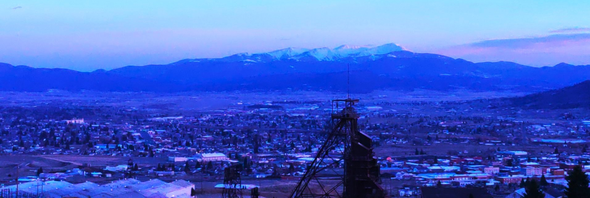

Butte Strong is a non-profit, non-partisan, organization focused on providing resources, tools, and education on the rights affforded to every person in Butte-Silver Bow community. Butte Strong also fosters a strong community of active neighbors with the goal of creating a community that not only looks out for their communitys, but also the larger systems working behind the scene.
This website is for informational purposes only and is not a substitute for professional advice or emergency services.
Mission Statement
To organize and protect the residents of Butte by ensuring equitable access to justice, safety, and resources without exception.
Vision Statement
At Butte Strong neighborhood watch, every person truly belongs and feels secure, where background or identity never dictates one's access to safety, and where community-led accountability ensures our systems work for the benefit of all.
Core Values
Collective Protection: We are a community coalition built on the simple, powerful act of neighbors looking out for one another.
Inherent Dignity: Every individual deserves respect and safety regardless of where they were born, what they look like, or who they are.
Equity is a Right: Justice and resources are not privileges to be earned, but fundamental rights for every neighbor.
Systemic Accountability: We don't just watch the streets; we watch the systems. We ensure that institutions meant to serve the public remain equitable and effective.